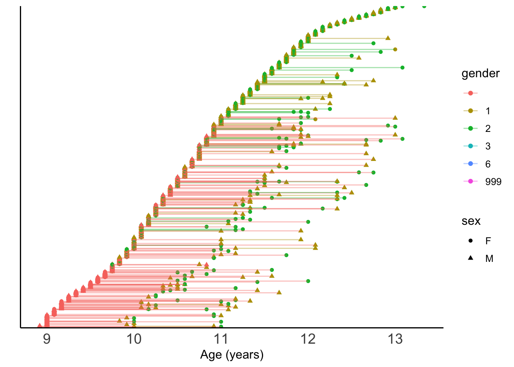
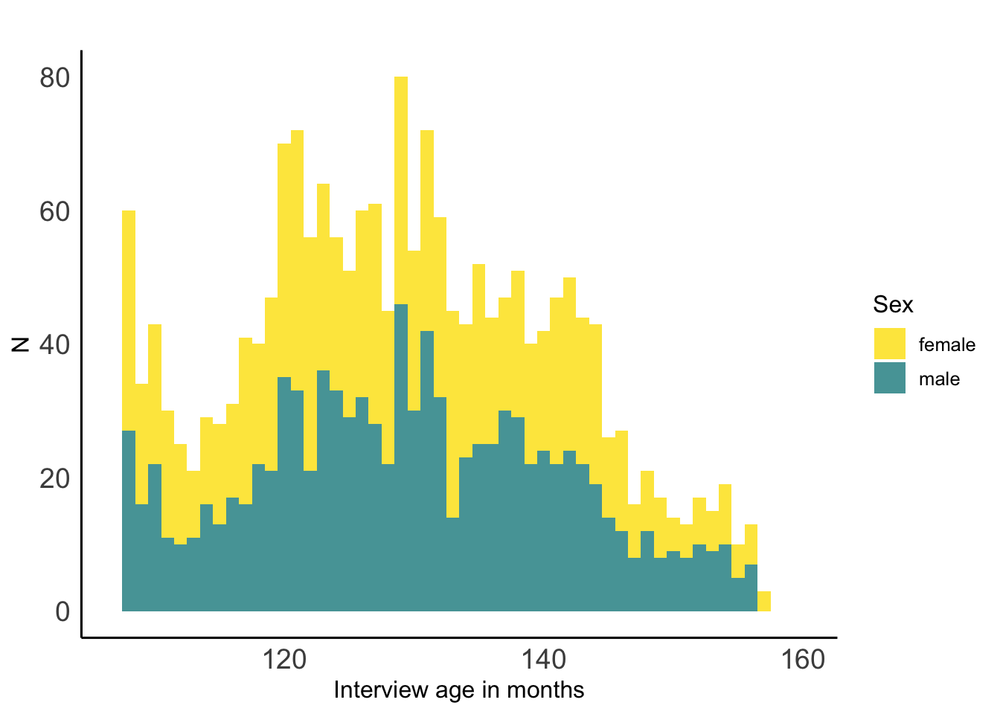
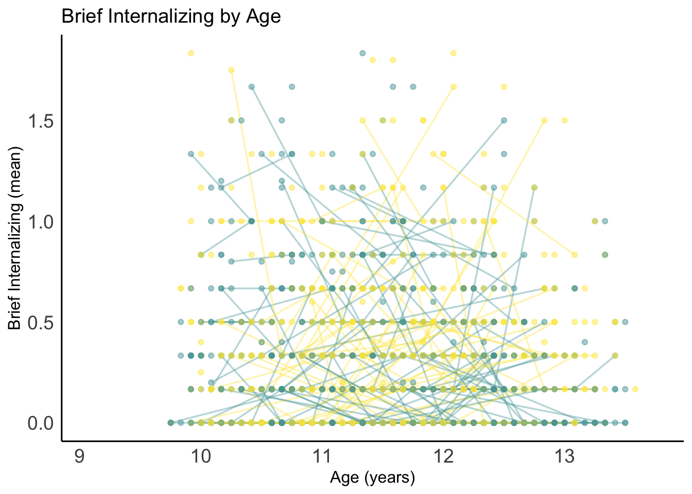
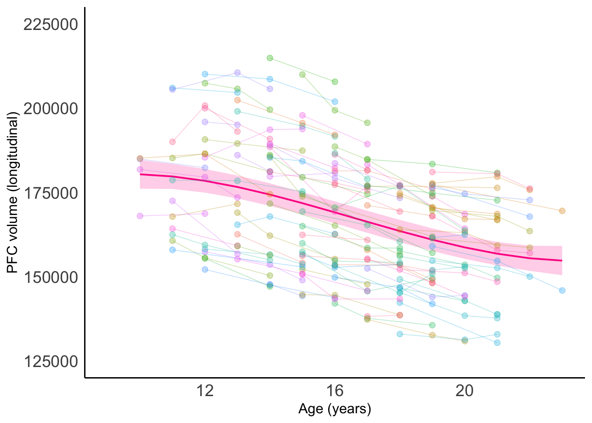
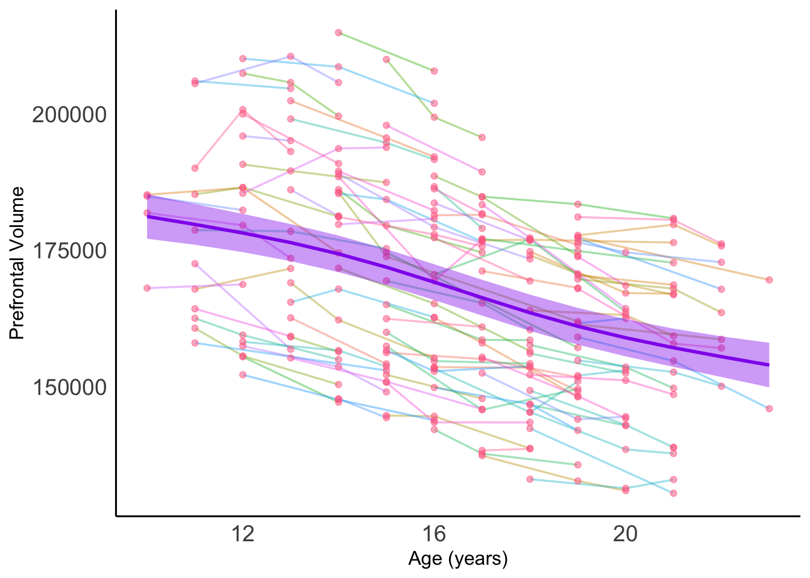

Chapter 16 MDC ABCD Workshop 2021 Multilevel Model Track 1 Tutorial
16.0.1 Load some ABCD data
16.0.2 Visualize longitudinal study design
# Reclass variables in Demographics datatable, and filter to only relevant variables for this section
abcddemo_tbl <- abcddemo %>%
filter(!sex=="Sex of the subject") %>%
select(interview_age,
src_subject_id,
eventname,
sex,
demo_gender_id_v2_l) %>%
mutate(interview_age=as.integer(interview_age),
src_subject_id=as.factor(src_subject_id),
eventname=as.factor(eventname),
sex=as.factor(sex),
gender=as.factor(demo_gender_id_v2_l))
# Filter to a subsample for easier visualization
random_rows <- sample(2000)
abcddemo_tbl <- abcddemo_tbl[random_rows, ]
study_design <- abcddemo_tbl[order(abcddemo_tbl$interview_age,
abcddemo_tbl$src_subject_id,
abcddemo_tbl$eventname),] %>%
mutate(Rank_nr=as.numeric(factor(src_subject_id,levels=unique(src_subject_id))))
study_design_plot<- ggplot(study_design,
aes(x=(interview_age/12),
y=Rank_nr,
group=src_subject_id,
shape=sex,
col=gender)) +
geom_point(alpha=1) +
geom_line(alpha=.4) +
ylab("") +
xlab("Age (years)") +
scale_y_discrete(breaks=NULL) +
theme_kate()+
theme(axis.text.y = element_blank())
# Take a look
print(study_design_plot)
ggsave(filename="abcd_study_design.png",
plot=study_design_plot, width=6, height=5, units='in', dpi=300)
#Print biological sex histogram
sex_histogram <- ggplot(abcddemo_tbl,aes(x=interview_age,fill=sex))+
scale_fill_manual(aes(fill=sex),
labels = c("female", "male"),
values = c("#FDE74C", "#56A3A6")) +
geom_histogram(alpha=1, position="stack",binwidth=1) +
xlim(min(abcddemo_tbl$interview_age),max(abcddemo_tbl$interview_age)) +
ggtitle("") +
guides(fill=guide_legend(title="Sex"))+
ylab("N") +
xlab("Interview age in months")+
theme_kate()
sex_histogram## Warning: Removed 4 rows containing missing values (geom_bar).
ggsave(filename="abcd_sex_histogram.png",
plot=sex_histogram, width=6, height=5, units='in', dpi=300)## Warning: Removed 4 rows containing missing values (geom_bar).16.0.3 Let’s visualize some of the ABCD dataset
## 'data.frame': 31319 obs. of 42 variables:
## $ collection_id : chr "collection_id" "2573" "2573" "2573" ...
## $ abcd_yssbpm01_id : chr "abcd_yssbpm01_id" "15499" "15504" "15522" ...
## $ dataset_id : chr "dataset_id" "34403" "34403" "34403" ...
## $ subjectkey : chr "The NDAR Global Unique Identifier (GUID) for research subject" "NDAR_INV00BD7VDC" "NDAR_INV00CY2MDM" "NDAR_INV00UMK5VC" ...
## $ src_subject_id : chr "Subject ID how it's defined in lab/project" "NDAR_INV00BD7VDC" "NDAR_INV00CY2MDM" "NDAR_INV00UMK5VC" ...
## $ interview_date : chr "Date on which the interview/genetic test/sampling/imaging/biospecimen was completed. MM/DD/YYYY" "04/24/2019" "01/13/2020" "09/25/2019" ...
## $ interview_age : chr "Age in months at the time of the interview/test/sampling/imaging." "123" "158" "132" ...
## $ sex : chr "Sex of the subject" "M" "M" "F" ...
## $ eventname : chr "The event name for which the data was collected" "1_year_follow_up_y_arm_1" "30_month_follow_up_arm_1" "1_year_follow_up_y_arm_1" ...
## $ bpm_y_scr_attention_r : chr "Raw Score: bpm_1_y plus bpm_3_y plus bpm_4_y plus bpm_5_y plus bpm_10_y plus bpm_14_y; Validation: All items must be answered" "3.0" "0.0" "7.0" ...
## $ bpm_y_scr_attention_t : chr "T-Score" "53.0" "50.0" "68.0" ...
## $ bpm_y_scr_attention_nm : chr "Number Missing Answers" "0.0" "0.0" "0.0" ...
## $ bpm_y_scr_attention_nt : chr "Number Total Questions" "6.0" "6.0" "6.0" ...
## $ bpm_y_ss_attention_mean: chr "Mean Score: Mean(bpm_1_y plus bpm_3_y plus bpm_4_y plus bpm_5_y plus bpm_10_y plus bpm_14_y); Validation: All i"| __truncated__ "0.5" "0.0" "1.1666666666666667" ...
## $ bpm_y_ss_attention_nm : chr "Number Missing Answers" "0.0" "0.0" "0.0" ...
## $ bpm_y_ss_attention_nt : chr "Number Total Questions" "6.0" "6.0" "6.0" ...
## $ bpm_y_scr_internal_r : chr "Raw Score: bpm_2_y plus bpm_6_y plus bpm_7_y plus bpm_8_y plus bpm_15_y plus bpm_16_y plus bpm_17_y; Validation"| __truncated__ "4.0" "0.0" "8.0" ...
## $ bpm_y_scr_internal_t : chr "T-Score" "62.0" "50.0" "68.0" ...
## $ bpm_y_scr_internal_nm : chr "Number Missing Answers" "0.0" "0.0" "0.0" ...
## $ bpm_y_scr_internal_nt : chr "Number Total Questions" "6.0" "6.0" "6.0" ...
## $ bpm_y_ss_internal_mean : chr "Mean Score: Mean(bpm_2_y plus bpm_6_y plus bpm_7_y plus bpm_8_y plus bpm_15_y plus bpm_16_y plus bpm_17_y); Val"| __truncated__ "0.6666666666666666" "0.0" "1.3333333333333333" ...
## $ bpm_y_ss_internal_nm : chr "Number Missing Answers" "0.0" "0.0" "0.0" ...
## $ bpm_y_ss_internal_nt : chr "Number Total Questions" "6.0" "6.0" "6.0" ...
## $ bpm_y_scr_external_r : chr "Raw Score: bpm_9_y plus bpm_11_y plus bpm_12_y plus bpm_13_y plus bpm_18_y plus bpm_19_y; Validation: All items"| __truncated__ "3.0" "0.0" "3.0" ...
## $ bpm_y_scr_external_t : chr "T-Score" "51.0" "50.0" "51.0" ...
## $ bpm_y_scr_external_nm : chr "Number Missing Answers" "0.0" "0.0" "0.0" ...
## $ bpm_y_scr_external_nt : chr "Number Total Questions" "7.0" "7.0" "7.0" ...
## $ bpm_y_ss_external_mean : chr "Mean Score: Mean(bpm_9_y plus bpm_11_y plus bpm_12_y plus bpm_13_y plus bpm_18_y plus bpm_19_y); Validation: Al"| __truncated__ "0.42857142857142855" "0.0" "0.42857142857142855" ...
## $ bpm_y_ss_external_nm : chr "Number Missing Answers" "0.0" "0.0" "0.0" ...
## $ bpm_y_ss_external_nt : chr "Number Total Questions" "7.0" "7.0" "7.0" ...
## $ bpm_y_scr_totalprob_r : chr "Raw Score: bpm_1_y plus bpm_2_y plus bpm_3_y plus bpm_4_y plus bpm_5_y plus bpm_6_y plus bpm_7_y plus bpm_8_y p"| __truncated__ "10.0" "0.0" "18.0" ...
## $ bpm_y_scr_totalprob_t : chr "T-Score" "57.0" "50.0" "66.0" ...
## $ bpm_y_scr_totalprob_nm : chr "Number Missing Answers" "0.0" "0.0" "0.0" ...
## $ bpm_y_scr_totalprob_nt : chr "Number Total Questions" "19.0" "19.0" "19.0" ...
## $ bpm_y_ss_totalprob_mean: chr "Mean: Mean(bpm_1_y plus bpm_2_y plus bpm_3_y plus bpm_4_y plus bpm_5_y plus bpm_6_y plus bpm_7_y plus bpm_8_y p"| __truncated__ "0.5263157894736842" "0.0" "0.9473684210526316" ...
## $ bpm_y_ss_totalprob_nm : chr "Number Missing Answers" "0.0" "0.0" "0.0" ...
## $ bpm_y_ss_totalprob_nt : chr "Number Total Questions" "19.0" "19.0" "19.0" ...
## $ poa_y_ss_sum : chr "NIH Toolbox Positive Affect; Sum(poa_nihtb_1_y plus poa_nihtb_2_yplus poa_nihtb_3_y plus poa_nihtb_4_y plus po"| __truncated__ "23.0" "24.0" "15.0" ...
## $ poa_y_ss_sum_nm : chr "Number Missing Answers" "0.0" "0.0" "0.0" ...
## $ poa_y_ss_sum_nt : chr "Number Total Questions" "9.0" "9.0" "9.0" ...
## $ collection_title : chr "collection_title" "Adolescent Brain Cognitive Development Study (ABCD)" "Adolescent Brain Cognitive Development Study (ABCD)" "Adolescent Brain Cognitive Development Study (ABCD)" ...
## $ study_cohort_name : chr "study_cohort_name" "ABCD 3.0 Data Release" "ABCD 3.0 Data Release" "ABCD 3.0 Data Release" ...# Reclassify relevant variables
abcdbrief <- abcdbrief %>%
filter(!sex=="Sex of the subject") %>%
mutate(interview_age=as.integer(interview_age),
src_subject_id=as.factor(src_subject_id),
eventname=as.factor(eventname),
sex=as.factor(sex),
bpm_internal=as.numeric(bpm_y_ss_internal_mean),
bpm_exteral=as.numeric(bpm_y_ss_external_mean)
)
# Filter to a subsample for easier visualization
random_rows <- sample(2000)
abcdbrief_short <- abcdbrief[random_rows, ]
# Let's just take a look at this variable over time
abcdbrief_plot<-ggplot(data=abcdbrief_short,
aes(x=interview_age/12,
y=bpm_internal))+
xlim(min(abcdbrief$interview_age/12),max(abcdbrief$interview_age/12))+
ylim(min(abcdbrief$bpm_internal),max(abcdbrief$bpm_internal))+
xlab("Age (years)")+
ylab("Brief Internalizing (mean)")+
ggtitle("Brief Internalizing by Age")+
geom_line(aes(colour=sex,
group=src_subject_id),
size=.6,
alpha=0.4)+
geom_point(aes(colour=sex,
group=src_subject_id),
size=1.5,
alpha=0.5)+
scale_color_manual(name= "sex",
labels = c("female", "male"),
values = c("#FDE74C", "#56A3A6"))+
theme_kate()+
theme(legend.position="none")
# Take a look
print(abcdbrief_plot)## Warning: Removed 15 row(s) containing missing values (geom_path).## Warning: Removed 15 rows containing missing values (geom_point).
16.0.4 Let’s dive into some modeling
# Load the dataset in the tutorial
load("braindata.Rdata")
# Check out variable classifications
str(braindata)## 'data.frame': 274 obs. of 20 variables:
## $ subid : num 84292 84292 84292 85244 85244 ...
## $ scanid : num 19660681 19680105 19690701 19670303 19690383 ...
## $ scannum : Factor w/ 3 levels "1","2","3": 1 2 3 1 2 1 2 1 2 3 ...
## $ age : num 18 20 21 18 20 18 21 18 20 21 ...
## $ sex : Factor w/ 2 levels "F","M": 1 1 1 1 1 1 1 2 2 2 ...
## $ prefrontal_vol_long : num 163943 163082 159252 146655 142802 ...
## $ prefrontal_vol_cross : num 161681 161585 160965 140177 141758 ...
## $ amygdala_vol_long : num 3611 3682 3560 3572 3604 ...
## $ amygdala_vol_cross : num 3648 3812 3569 3489 3379 ...
## $ caudate_vol_long : num 8756 8540 8407 7934 7917 ...
## $ caudate_vol_cross : num 7895 7968 7945 7322 7367 ...
## $ hippocampus_vol_long : num 9345 9120 9079 7892 7631 ...
## $ hippocampus_vol_cross: num 8905 9021 8799 7864 7350 ...
## $ nacc_vol_long : num 1396 1445 1442 1417 1462 ...
## $ nacc_vol_cross : num 1204 1256 1239 1168 1187 ...
## $ thalamus_vol_long : num 15948 15783 15876 15864 15822 ...
## $ thalamus_vol_cross : num 15234 15083 15777 15258 15460 ...
## $ putamen_vol_long : num 12182 11873 11808 12021 11591 ...
## $ putamen_vol_cross : num 11310 11030 11249 10908 10797 ...
## $ motion : int 1 1 1 1 1 1 1 1 1 1 ...# Fix a variable classification
braindata<-braindata %>%
mutate(subid=as.factor(subid))
# Create age-centered variable to reduce correlations between age and polynomial terms
braindata<-braindata %>%
mutate(agecent=age-(mean(age)))
# Create polynomial terms to examine non-linear group models
braindata<-braindata %>%
mutate(agecentsq=agecent*agecent,
agecentcu=agecent*agecent*agecent)
# Create unconditional model using nlme package (lme function)
uncond_PFCmodel=lme(prefrontal_vol_long ~ 1,
method="ML",
random = ~1|subid,
data=braindata)
# Create unconditional model using lme4 package (lmer function)
uncond_PFCmodel_lmer=lmer(prefrontal_vol_long ~ 1 +
(1 | subid),
REML = FALSE,
data=braindata)
## Linear age model (nlme)
lin_PFCmodel=lme(prefrontal_vol_long ~ agecent,
method="ML",
random = ~1|subid,
data=braindata)
## Linear age model (lme4)
lin_PFCmodel_lmer=lmer(prefrontal_vol_long ~ agecent +
(1 | subid),
REML = FALSE,
data=braindata)
# Take a look at the fixed effects coefficient
fixef(lin_PFCmodel)## (Intercept) agecent
## 167750.369 -2323.406## (Intercept) agecent
## 167750.369 -2323.406## (Intercept) agecent
## 80796 155714.7 -2323.406
## 80804 152915.0 -2323.406
## 80828 181501.5 -2323.406
## 80964 154999.6 -2323.406
## 81028 173129.6 -2323.406
## 81980 192268.0 -2323.406
## 82828 158364.2 -2323.406
## 83308 171642.2 -2323.406
## 84100 177579.3 -2323.406
## 84116 183780.2 -2323.406
## 84124 176993.8 -2323.406
## 84156 187290.7 -2323.406
## 84260 181683.0 -2323.406
## 84292 169548.4 -2323.406
## 84372 159533.7 -2323.406
## 84412 139096.2 -2323.406
## 84444 177101.8 -2323.406
## 84508 142623.5 -2323.406
## 84564 169383.9 -2323.406
## 84588 157338.4 -2323.406
## 84596 149221.3 -2323.406
## 84612 176743.7 -2323.406
## 84668 172685.2 -2323.406
## 84676 181819.9 -2323.406
## 84684 174647.4 -2323.406
## 84732 146216.6 -2323.406
## 84796 151139.1 -2323.406
## 84804 163450.4 -2323.406
## 84812 184301.8 -2323.406
## 84868 200256.2 -2323.406
## 84876 195899.0 -2323.406
## 84900 177357.3 -2323.406
## 84908 207327.3 -2323.406
## 84916 188703.3 -2323.406
## 84948 143658.9 -2323.406
## 84956 167123.4 -2323.406
## 84964 180644.1 -2323.406
## 84996 161255.2 -2323.406
## 85004 173915.9 -2323.406
## 85020 140818.0 -2323.406
## 85092 161158.5 -2323.406
## 85172 152332.5 -2323.406
## 85180 156115.3 -2323.406
## 85204 165541.3 -2323.406
## 85244 150937.7 -2323.406
## 85252 160302.7 -2323.406
## 85284 182671.9 -2323.406
## 85316 149586.0 -2323.406
## 85556 190716.0 -2323.406
## 85572 169434.3 -2323.406
## 85636 152704.5 -2323.406
## 85644 150847.9 -2323.406
## 85660 149879.9 -2323.406
## 85668 148180.3 -2323.406
## 85676 159704.4 -2323.406
## 85700 140191.7 -2323.406
## 85708 162332.5 -2323.406
## 85724 143842.9 -2323.406
## 85756 194529.2 -2323.406
## 85764 160492.2 -2323.406
## 85772 179342.8 -2323.406
## 85820 200818.8 -2323.406
## 85868 163833.2 -2323.406
## 85884 169087.5 -2323.406
## 85900 147774.8 -2323.406
## 85948 149199.8 -2323.406
## 85956 154255.4 -2323.406
## 85964 142429.3 -2323.406
## 85996 181676.3 -2323.406
## 86012 141919.7 -2323.406
## 86020 183444.9 -2323.406
## 86028 170891.8 -2323.406
## 86044 152281.7 -2323.406
## 86052 198136.2 -2323.406
## 86068 186011.3 -2323.406
## 86076 179367.1 -2323.406
## 86084 176666.9 -2323.406
## 86092 147098.0 -2323.406
## 86116 181259.8 -2323.406
## 86124 154543.4 -2323.406
## 86140 176715.2 -2323.406
## 86148 155906.1 -2323.406
## 86156 167181.9 -2323.406
## 86172 184302.3 -2323.406
## 86188 147502.7 -2323.406
## 86292 179197.6 -2323.406
## 86300 192151.2 -2323.406
## 86308 178068.4 -2323.406
## 86324 151649.0 -2323.406
## 86340 182247.4 -2323.406
## 86356 145823.0 -2323.406
## 86372 154547.7 -2323.406
## 86380 176326.6 -2323.406
## 86388 158167.3 -2323.406
## 86396 170707.2 -2323.406
## 86532 183811.3 -2323.406
## 86548 187074.7 -2323.406
## 86556 188814.7 -2323.406
## 86564 176288.1 -2323.406
## 86612 174468.7 -2323.406
## 86620 184098.6 -2323.406
## 86628 141290.9 -2323.406
## 86676 160735.2 -2323.406## $subid
## (Intercept) agecent
## 80796 155714.7 -2323.406
## 80804 152915.0 -2323.406
## 80828 181501.5 -2323.406
## 80964 154999.6 -2323.406
## 81028 173129.6 -2323.406
## 81980 192268.0 -2323.406
## 82828 158364.2 -2323.406
## 83308 171642.2 -2323.406
## 84100 177579.3 -2323.406
## 84116 183780.2 -2323.406
## 84124 176993.8 -2323.406
## 84156 187290.7 -2323.406
## 84260 181683.0 -2323.406
## 84292 169548.4 -2323.406
## 84372 159533.7 -2323.406
## 84412 139096.2 -2323.406
## 84444 177101.8 -2323.406
## 84508 142623.5 -2323.406
## 84564 169383.9 -2323.406
## 84588 157338.4 -2323.406
## 84596 149221.3 -2323.406
## 84612 176743.7 -2323.406
## 84668 172685.2 -2323.406
## 84676 181819.9 -2323.406
## 84684 174647.4 -2323.406
## 84732 146216.6 -2323.406
## 84796 151139.1 -2323.406
## 84804 163450.4 -2323.406
## 84812 184301.8 -2323.406
## 84868 200256.2 -2323.406
## 84876 195899.0 -2323.406
## 84900 177357.3 -2323.406
## 84908 207327.3 -2323.406
## 84916 188703.3 -2323.406
## 84948 143658.9 -2323.406
## 84956 167123.4 -2323.406
## 84964 180644.1 -2323.406
## 84996 161255.2 -2323.406
## 85004 173915.9 -2323.406
## 85020 140818.0 -2323.406
## 85092 161158.5 -2323.406
## 85172 152332.5 -2323.406
## 85180 156115.3 -2323.406
## 85204 165541.3 -2323.406
## 85244 150937.7 -2323.406
## 85252 160302.7 -2323.406
## 85284 182671.9 -2323.406
## 85316 149586.0 -2323.406
## 85556 190716.0 -2323.406
## 85572 169434.3 -2323.406
## 85636 152704.5 -2323.406
## 85644 150847.9 -2323.406
## 85660 149879.9 -2323.406
## 85668 148180.3 -2323.406
## 85676 159704.4 -2323.406
## 85700 140191.7 -2323.406
## 85708 162332.5 -2323.406
## 85724 143842.9 -2323.406
## 85756 194529.2 -2323.406
## 85764 160492.2 -2323.406
## 85772 179342.8 -2323.406
## 85820 200818.8 -2323.406
## 85868 163833.2 -2323.406
## 85884 169087.5 -2323.406
## 85900 147774.8 -2323.406
## 85948 149199.8 -2323.406
## 85956 154255.4 -2323.406
## 85964 142429.3 -2323.406
## 85996 181676.3 -2323.406
## 86012 141919.7 -2323.406
## 86020 183444.9 -2323.406
## 86028 170891.8 -2323.406
## 86044 152281.7 -2323.406
## 86052 198136.2 -2323.406
## 86068 186011.3 -2323.406
## 86076 179367.1 -2323.406
## 86084 176666.9 -2323.406
## 86092 147098.0 -2323.406
## 86116 181259.8 -2323.406
## 86124 154543.4 -2323.406
## 86140 176715.2 -2323.406
## 86148 155906.1 -2323.406
## 86156 167181.9 -2323.406
## 86172 184302.3 -2323.406
## 86188 147502.7 -2323.406
## 86292 179197.6 -2323.406
## 86300 192151.2 -2323.406
## 86308 178068.4 -2323.406
## 86324 151649.0 -2323.406
## 86340 182247.4 -2323.406
## 86356 145823.0 -2323.406
## 86372 154547.7 -2323.406
## 86380 176326.6 -2323.406
## 86388 158167.3 -2323.406
## 86396 170707.2 -2323.406
## 86532 183811.3 -2323.406
## 86548 187074.7 -2323.406
## 86556 188814.7 -2323.406
## 86564 176288.1 -2323.406
## 86612 174468.7 -2323.406
## 86620 184098.6 -2323.406
## 86628 141290.9 -2323.406
## 86676 160735.2 -2323.406
##
## attr(,"class")
## [1] "coef.mer"## (Intercept).(Intercept) (Intercept).agecent agecent.(Intercept)
## 80796 0.00000077174627 158038.1 -158038.1
## 80804 0.00000130629633 155238.4 -155238.4
## 80828 -0.00000083274790 183824.9 -183824.9
## 80964 0.00000083839404 157323.0 -157323.0
## 81028 -0.00000045265188 175453.0 -175453.0
## 81980 -0.00000159442425 194591.4 -194591.4
## 82828 0.00000061682658 160687.6 -160687.6
## 83308 -0.00000038955477 173965.6 -173965.6
## 84100 -0.00000080341124 179902.7 -179902.7
## 84116 -0.00000135030132 186103.6 -186103.6
## 84124 -0.00000047401409 179317.2 -179317.2
## 84156 -0.00000108632958 189614.1 -189614.1
## 84260 -0.00000080050086 184006.4 -184006.4
## 84292 -0.00000000759610 171871.8 -171871.8
## 84372 0.00000062270556 161857.1 -161857.1
## 84412 0.00000186747639 141419.6 -141419.6
## 84444 -0.00000049159280 179425.2 -179425.2
## 84508 0.00000157015165 144946.9 -144946.9
## 84564 -0.00000002124580 171707.3 -171707.3
## 84588 0.00000058294972 159661.8 -159661.8
## 84596 0.00000171657302 151544.7 -151544.7
## 84612 -0.00000042558531 179067.1 -179067.1
## 84668 -0.00000032398384 175008.6 -175008.6
## 84676 -0.00000098347664 184143.3 -184143.3
## 84684 -0.00000056691351 176970.8 -176970.8
## 84732 0.00000121421181 148540.1 -148540.1
## 84796 0.00000145597733 153462.5 -153462.5
## 84804 0.00000025442569 165773.8 -165773.8
## 84812 -0.00000100815669 186625.2 -186625.2
## 84868 -0.00000205123797 202579.6 -202579.6
## 84876 -0.00000187652768 198222.4 -198222.4
## 84900 -0.00000063853804 179680.7 -179680.7
## 84908 -0.00000374621595 209650.7 -209650.7
## 84916 -0.00000122937490 191026.7 -191026.7
## 84948 0.00000213881140 145982.3 -145982.3
## 84956 0.00000007616472 169446.8 -169446.8
## 84964 -0.00000072453986 182967.5 -182967.5
## 84996 0.00000041382737 163578.7 -163578.7
## 85004 -0.00000033568358 176239.3 -176239.3
## 85020 0.00000171599095 143141.5 -143141.5
## 85092 0.00000051804818 163481.9 -163481.9
## 85172 0.00000098365126 154655.9 -154655.9
## 85180 0.00000072491821 158438.7 -158438.7
## 85204 0.00000014534453 167864.7 -167864.7
## 85244 0.00000165379606 153261.1 -153261.1
## 85252 0.00000077864388 162626.1 -162626.1
## 85284 -0.00000139322947 184995.3 -184995.3
## 85316 0.00000100306352 151909.4 -151909.4
## 85556 -0.00000149721745 193039.4 -193039.4
## 85572 -0.00000021851156 171757.7 -171757.7
## 85636 0.00000073501724 155027.9 -155027.9
## 85644 0.00000091266702 153171.3 -153171.3
## 85660 0.00000102823833 152203.3 -152203.3
## 85668 0.00000133112189 150503.7 -150503.7
## 85676 0.00000085082138 162027.8 -162027.8
## 85700 0.00000183153315 142515.1 -142515.1
## 85708 0.00000047721551 164655.9 -164655.9
## 85724 0.00000233307946 146166.3 -146166.3
## 85756 -0.00000264769187 196852.6 -196852.6
## 85764 0.00000038527651 162815.6 -162815.6
## 85772 -0.00000076292781 181666.2 -181666.2
## 85820 -0.00000215196633 203142.2 -203142.2
## 85868 0.00000039412407 166156.6 -166156.6
## 85884 -0.00000002607703 171410.9 -171410.9
## 85900 0.00000175414607 150098.3 -150098.3
## 85948 0.00000120181357 151523.2 -151523.2
## 85956 0.00000084153726 156578.8 -156578.8
## 85964 0.00000150597771 144752.7 -144752.7
## 85996 -0.00000117000309 183999.7 -183999.7
## 86012 0.00000235013431 144243.1 -144243.1
## 86020 -0.00000085635111 185768.3 -185768.3
## 86028 -0.00000047130743 173215.2 -173215.2
## 86044 0.00000104145147 154605.1 -154605.1
## 86052 -0.00000202757656 200459.6 -200459.6
## 86068 -0.00000183546217 188334.7 -188334.7
## 86076 -0.00000074267155 181690.5 -181690.5
## 86084 -0.00000092966366 178990.3 -178990.3
## 86092 0.00000120259938 149421.4 -149421.4
## 86116 -0.00000124494545 183583.2 -183583.2
## 86124 0.00000108900713 156866.8 -156866.8
## 86140 -0.00000088542583 179038.6 -179038.6
## 86148 0.00000092916889 158229.6 -158229.6
## 86156 -0.00000012107193 169505.3 -169505.3
## 86172 -0.00000112812268 186625.7 -186625.7
## 86188 0.00000122078927 149826.1 -149826.1
## 86292 -0.00000065576751 181521.0 -181521.0
## 86300 -0.00000229536090 194474.6 -194474.6
## 86308 -0.00000086537329 180391.8 -180391.8
## 86324 0.00000135952723 153972.4 -153972.4
## 86340 -0.00000140236807 184570.8 -184570.8
## 86356 0.00000136974268 148146.4 -148146.4
## 86372 0.00000089945388 156871.1 -156871.1
## 86380 -0.00000056304270 178650.0 -178650.0
## 86388 0.00000070541864 160490.7 -160490.7
## 86396 -0.00000004746835 173030.6 -173030.6
## 86532 -0.00000149969128 186134.7 -186134.7
## 86548 -0.00000191852450 189398.1 -189398.1
## 86556 -0.00000118179014 191138.1 -191138.1
## 86564 -0.00000056062709 178611.5 -178611.5
## 86612 -0.00000061030732 176792.1 -176792.1
## 86620 -0.00000117000309 186422.0 -186422.0
## 86628 0.00000250650919 143614.3 -143614.3
## 86676 0.00000064057531 163058.6 -163058.6
## agecent.agecent
## 80796 -0.00000003308605
## 80804 -0.00000003308605
## 80828 -0.00000003308605
## 80964 -0.00000003308605
## 81028 -0.00000003308605
## 81980 -0.00000003308605
## 82828 -0.00000003308605
## 83308 -0.00000003308605
## 84100 -0.00000003308605
## 84116 -0.00000003308605
## 84124 -0.00000003308605
## 84156 -0.00000003308605
## 84260 -0.00000003308605
## 84292 -0.00000003308605
## 84372 -0.00000003308605
## 84412 -0.00000003308605
## 84444 -0.00000003308605
## 84508 -0.00000003308605
## 84564 -0.00000003308605
## 84588 -0.00000003308605
## 84596 -0.00000003308605
## 84612 -0.00000003308605
## 84668 -0.00000003308605
## 84676 -0.00000003308605
## 84684 -0.00000003308605
## 84732 -0.00000003308605
## 84796 -0.00000003308605
## 84804 -0.00000003308605
## 84812 -0.00000003308605
## 84868 -0.00000003308605
## 84876 -0.00000003308605
## 84900 -0.00000003308605
## 84908 -0.00000003308605
## 84916 -0.00000003308605
## 84948 -0.00000003308605
## 84956 -0.00000003308605
## 84964 -0.00000003308605
## 84996 -0.00000003308605
## 85004 -0.00000003308605
## 85020 -0.00000003308605
## 85092 -0.00000003308605
## 85172 -0.00000003308605
## 85180 -0.00000003308605
## 85204 -0.00000003308605
## 85244 -0.00000003308605
## 85252 -0.00000003308605
## 85284 -0.00000003308605
## 85316 -0.00000003308605
## 85556 -0.00000003308605
## 85572 -0.00000003308605
## 85636 -0.00000003308605
## 85644 -0.00000003308605
## 85660 -0.00000003308605
## 85668 -0.00000003308605
## 85676 -0.00000003308605
## 85700 -0.00000003308605
## 85708 -0.00000003308605
## 85724 -0.00000003308605
## 85756 -0.00000003308605
## 85764 -0.00000003308605
## 85772 -0.00000003308605
## 85820 -0.00000003308605
## 85868 -0.00000003308605
## 85884 -0.00000003308605
## 85900 -0.00000003308605
## 85948 -0.00000003308605
## 85956 -0.00000003308605
## 85964 -0.00000003308605
## 85996 -0.00000003308605
## 86012 -0.00000003308605
## 86020 -0.00000003308605
## 86028 -0.00000003308605
## 86044 -0.00000003308605
## 86052 -0.00000003308605
## 86068 -0.00000003308605
## 86076 -0.00000003308605
## 86084 -0.00000003308605
## 86092 -0.00000003308605
## 86116 -0.00000003308605
## 86124 -0.00000003308605
## 86140 -0.00000003308605
## 86148 -0.00000003308605
## 86156 -0.00000003308605
## 86172 -0.00000003308605
## 86188 -0.00000003308605
## 86292 -0.00000003308605
## 86300 -0.00000003308605
## 86308 -0.00000003308605
## 86324 -0.00000003308605
## 86340 -0.00000003308605
## 86356 -0.00000003308605
## 86372 -0.00000003308605
## 86380 -0.00000003308605
## 86388 -0.00000003308605
## 86396 -0.00000003308605
## 86532 -0.00000003308605
## 86548 -0.00000003308605
## 86556 -0.00000003308605
## 86564 -0.00000003308605
## 86612 -0.00000003308605
## 86620 -0.00000003308605
## 86628 -0.00000003308605
## 86676 -0.00000003308605## Linear mixed-effects model fit by maximum likelihood
## Data: braindata
## AIC BIC logLik
## 5633.229 5647.682 -2812.615
##
## Random effects:
## Formula: ~1 | subid
## (Intercept) Residual
## StdDev: 16693.86 3057.588
##
## Fixed effects: prefrontal_vol_long ~ agecent
## Value Std.Error DF t-value p-value
## (Intercept) 167750.37 1661.7734 170 100.94659 0
## agecent -2323.41 141.3133 170 -16.44153 0
## Correlation:
## (Intr)
## agecent 0.007
##
## Standardized Within-Group Residuals:
## Min Q1 Med Q3 Max
## -3.01902160 -0.48365525 0.01745049 0.49701984 2.37181597
##
## Number of Observations: 274
## Number of Groups: 103## Linear mixed model fit by maximum likelihood ['lmerMod']
## Formula: prefrontal_vol_long ~ agecent + (1 | subid)
## Data: braindata
##
## AIC BIC logLik deviance df.resid
## 5633.2 5647.7 -2812.6 5625.2 270
##
## Scaled residuals:
## Min 1Q Median 3Q Max
## -3.01902 -0.48366 0.01745 0.49702 2.37182
##
## Random effects:
## Groups Name Variance Std.Dev.
## subid (Intercept) 278685115 16694
## Residual 9348845 3058
## Number of obs: 274, groups: subid, 103
##
## Fixed effects:
## Estimate Std. Error t value
## (Intercept) 167750.4 1655.7 101.3
## agecent -2323.4 140.8 -16.5
##
## Correlation of Fixed Effects:
## (Intr)
## agecent 0.007## Let's add a random slope to the model to make it an unconditional growth model
lin_PFCmodel_rs=lme(prefrontal_vol_long ~ agecent,
method="ML",
random = ~1+agecent|subid,
data=braindata)
lin_PFCmodel_rs_lmer=lmer(prefrontal_vol_long ~ agecent +
(agecent | subid),
REML = FALSE,
data=braindata)
# Summary of models
summary(lin_PFCmodel_rs)## Linear mixed-effects model fit by maximum likelihood
## Data: braindata
## AIC BIC logLik
## 5633.539 5655.218 -2810.77
##
## Random effects:
## Formula: ~1 + agecent | subid
## Structure: General positive-definite, Log-Cholesky parametrization
## StdDev Corr
## (Intercept) 16670.9877 (Intr)
## agecent 786.1584 -0.054
## Residual 2766.3925
##
## Fixed effects: prefrontal_vol_long ~ agecent
## Value Std.Error DF t-value p-value
## (Intercept) 167758.95 1668.4400 170 100.54838 0
## agecent -2328.61 154.4948 170 -15.07245 0
## Correlation:
## (Intr)
## agecent -0.018
##
## Standardized Within-Group Residuals:
## Min Q1 Med Q3 Max
## -2.831741446 -0.471641155 0.009997165 0.456398316 2.400944924
##
## Number of Observations: 274
## Number of Groups: 103## Linear mixed model fit by maximum likelihood ['lmerMod']
## Formula: prefrontal_vol_long ~ agecent + (agecent | subid)
## Data: braindata
##
## AIC BIC logLik deviance df.resid
## 5633.5 5655.2 -2810.8 5621.5 268
##
## Scaled residuals:
## Min 1Q Median 3Q Max
## -2.83176 -0.47164 0.00999 0.45640 2.40097
##
## Random effects:
## Groups Name Variance Std.Dev. Corr
## subid (Intercept) 277920576 16671.0
## agecent 618133 786.2 -0.05
## Residual 7652752 2766.4
## Number of obs: 274, groups: subid, 103
##
## Fixed effects:
## Estimate Std. Error t value
## (Intercept) 167759.0 1662.3 100.92
## agecent -2328.6 153.9 -15.13
##
## Correlation of Fixed Effects:
## (Intr)
## agecent -0.018## Model df AIC BIC logLik Test L.Ratio p-value
## lin_PFCmodel 1 4 5633.229 5647.682 -2812.615
## lin_PFCmodel_rs 2 6 5633.539 5655.218 -2810.770 1 vs 2 3.689881 0.158## Data: braindata
## Models:
## lin_PFCmodel_lmer: prefrontal_vol_long ~ agecent + (1 | subid)
## lin_PFCmodel_rs_lmer: prefrontal_vol_long ~ agecent + (agecent | subid)
## npar AIC BIC logLik deviance Chisq Df Pr(>Chisq)
## lin_PFCmodel_lmer 4 5633.2 5647.7 -2812.6 5625.2
## lin_PFCmodel_rs_lmer 6 5633.5 5655.2 -2810.8 5621.5 3.6899 2 0.15816.0.5 Modeling continued — checking out non-linear group-level trajectories
## Quadratic age model (nlme)
quad_PFCmodel=lme(prefrontal_vol_long ~ agecent+agecentsq,
method="ML",
random = ~1|subid,
data=braindata)
## Quadratic age model (lme4)
quad_PFCmodel_lmer=lmer(prefrontal_vol_long ~ agecent+agecentsq+
(1 | subid),
REML = FALSE,
data=braindata)
## Cubic age model
cub_PFCmodel=lme(prefrontal_vol_long ~ agecent+agecentsq+agecentcu,
method="ML",
random = ~1|subid,
data=braindata)
## Cubic age model (lme4()
cub_PFCmodel_lmer=lmer(prefrontal_vol_long ~ agecent+agecentsq+agecentcu+
(1 | subid),
REML = FALSE,
data=braindata)
## Using a model fit approach
# Compare model fit using anova
age_predict_PFC_table<-anova(uncond_PFCmodel,
lin_PFCmodel,
quad_PFCmodel,
cub_PFCmodel)
# take a look
age_predict_PFC_table## Model df AIC BIC logLik Test L.Ratio p-value
## uncond_PFCmodel 1 3 5803.174 5814.014 -2898.587
## lin_PFCmodel 2 4 5633.229 5647.682 -2812.615 1 vs 2 171.94548 <.0001
## quad_PFCmodel 3 5 5635.092 5653.157 -2812.546 2 vs 3 0.13714 0.7111
## cub_PFCmodel 4 6 5627.968 5649.647 -2807.984 3 vs 4 9.12345 0.0025# The lme4 output should look the same
anova(uncond_PFCmodel_lmer,
lin_PFCmodel_lmer,
quad_PFCmodel_lmer,
cub_PFCmodel_lmer)## Data: braindata
## Models:
## uncond_PFCmodel_lmer: prefrontal_vol_long ~ 1 + (1 | subid)
## lin_PFCmodel_lmer: prefrontal_vol_long ~ agecent + (1 | subid)
## quad_PFCmodel_lmer: prefrontal_vol_long ~ agecent + agecentsq + (1 | subid)
## cub_PFCmodel_lmer: prefrontal_vol_long ~ agecent + agecentsq + agecentcu + (1 |
## cub_PFCmodel_lmer: subid)
## npar AIC BIC logLik deviance Chisq Df
## uncond_PFCmodel_lmer 3 5803.2 5814.0 -2898.6 5797.2
## lin_PFCmodel_lmer 4 5633.2 5647.7 -2812.6 5625.2 171.9455 1
## quad_PFCmodel_lmer 5 5635.1 5653.2 -2812.6 5625.1 0.1371 1
## cub_PFCmodel_lmer 6 5628.0 5649.6 -2808.0 5616.0 9.1235 1
## Pr(>Chisq)
## uncond_PFCmodel_lmer
## lin_PFCmodel_lmer < 0.00000000000000022 ***
## quad_PFCmodel_lmer 0.711136
## cub_PFCmodel_lmer 0.002524 **
## ---
## Signif. codes: 0 '***' 0.001 '**' 0.01 '*' 0.05 '.' 0.1 ' ' 1#compare cubic model and linear model
age_predict_PFC_linvscub_table<-anova(lin_PFCmodel,cub_PFCmodel)
age_predict_PFC_linvscub_table## Model df AIC BIC logLik Test L.Ratio p-value
## lin_PFCmodel 1 4 5633.229 5647.682 -2812.615
## cub_PFCmodel 2 6 5627.968 5649.647 -2807.984 1 vs 2 9.260595 0.0098# Looks like the cubic model is the best fit
bestagemodel_PFC<-cub_PFCmodel
# Graph PFC group-level polynomial model
# Need to create a dataframe of predicted values for ages contained within the sample
agecent<-round(seq(min(braindata$agecent,na.rm = TRUE),
max(braindata$agecent,na.rm = TRUE),by=1),
2)
agecentsq=agecent*agecent
agecentcu=agecent*agecent*agecent
data.pred = data.frame(agecent=agecent,
agecentsq=agecentsq,
agecentcu=agecentcu)
data.pred$age<-(data.pred$agecent+mean(braindata$age))
y.pred = predict(bestagemodel_PFC,
data.pred,
level=0)
data.pred = cbind.data.frame(data.pred,
y.pred)
scale = 1.96
designmat<-model.matrix(eval(eval(bestagemodel_PFC$call$fixed)[-2]),
data.pred[-3]) #make design matrix
SDvalue<-sqrt(diag(designmat %*% bestagemodel_PFC$varFix %*% t(designmat))) #calculate standard deviation for each point for each model
y.lower<-y.pred-(scale*SDvalue) #calculate confidence intervals - lower
y.upper<-y.pred+(scale*SDvalue) #calculate confidence intervals - upper
data.pred = cbind.data.frame(data.pred,
y.lower,
y.upper)
data.pred$prefrontal_vol_long<-data.pred$y.pred
# Graph it
PFC_Age<-ggplot(data=braindata,
aes(x=age,
y=prefrontal_vol_long))+
xlim(9,23)+
ylim(125000,225000)+
xlab("Age (years)")+
ylab("PFC volume (longitudinal)")+
geom_line(data=data.pred,
aes(x=age, y=prefrontal_vol_long), size=.7, colour="deeppink")+
geom_ribbon(data=data.pred,
aes(ymin=y.lower, ymax=y.upper), alpha=0.2, fill="deeppink")+
geom_line(aes(colour=subid, group=subid),size=.3,alpha=0.3)+
geom_point(aes(colour=subid, group=subid),size=2,alpha=0.3)+
theme_kate() +
theme(legend.position="none")
print(PFC_Age)
16.0.6 Let’s try a GAMM approach
# Model a penalized cubic regression spline of with 4 knots
gamm4_pfc<-gamm(prefrontal_vol_long ~ s(age,bs = "cs",k=4),
random=list(subid=~1),
data=(braindata))
summary(gamm4_pfc$gam)##
## Family: gaussian
## Link function: identity
##
## Formula:
## prefrontal_vol_long ~ s(age, bs = "cs", k = 4)
##
## Parametric coefficients:
## Estimate Std. Error t value Pr(>|t|)
## (Intercept) 167748 1653 101.5 <0.0000000000000002 ***
## ---
## Signif. codes: 0 '***' 0.001 '**' 0.01 '*' 0.05 '.' 0.1 ' ' 1
##
## Approximate significance of smooth terms:
## edf Ref.df F p-value
## s(age) 2.8 3 96.32 <0.0000000000000002 ***
## ---
## Signif. codes: 0 '***' 0.001 '**' 0.01 '*' 0.05 '.' 0.1 ' ' 1
##
## R-sq.(adj) = 0.169
## Scale est. = 9.0152e+06 n = 274# Create a predicted age data frame for graphing
age<-round(seq(min(braindata$age,na.rm = TRUE),
max(braindata$age,na.rm = TRUE),by=1),2)
data.pred = data.frame(age=age)
y.pred = predict(gamm4_pfc$gam,
newdata=data.pred,se=T)
data.pred = cbind.data.frame(data.pred,
y.pred)
scale = 1.96
y.upper = y.pred$fit + (scale*y.pred$se.fit)
y.lower = y.pred$fit - (scale*y.pred$se.fit)
prefrontal_vol_long<-data.pred$fit
assign("gamm4_pfc_pred",cbind.data.frame(data.pred,
y.lower,
y.upper,
prefrontal_vol_long))
rm(avgage,data.pred,y.pred,y.upper,y.lower)## Warning in rm(avgage, data.pred, y.pred, y.upper, y.lower): object 'avgage' not
## found# Graph it
gamm4_pfc_plot<-ggplot(data=NULL,
aes(x=age,
y=prefrontal_vol_long))+
ylab("Prefrontal Volume")+
xlab("Age (years)")+
geom_line(data=braindata,
aes(group=subid,
colour=subid),
alpha=0.4,
size=.6) +
geom_point(data=braindata,
aes(colour=sex),
size=1.5,
alpha=0.5) +
geom_line(data=gamm4_pfc_pred,
aes(x=age,
y=prefrontal_vol_long),
size=1,
colour="purple2")+
geom_ribbon(data=gamm4_pfc_pred,
aes(ymin=y.lower,
ymax=y.upper),
alpha=0.4,
fill="purple2")+
theme_kate()+
theme(legend.position="none")
print(gamm4_pfc_plot) 
16.0.7 Looking at models for different groups
# Create a gamm with sex interacting on age
gamm_fullsexint_pfc<-
gamm(prefrontal_vol_long ~ sex +
s(age,bs = "cs",k=4) +
s(age,by=sex,k=4),
random=list(subid=~1),
data=(braindata))
# Just main effects of sex
gamm_mainsexint_pfc<-
gamm(prefrontal_vol_long ~ sex +
s(age,bs = "cs",k=4),
random=list(subid=~1),
data=(braindata))
# Age only model
gamm_ageonly_pfc<-
gamm(prefrontal_vol_long ~ s(age,bs = "cs",k=4),
random=list(subid=~1),
data=(braindata))
# Compare the models
modcompare<-anova(gamm_ageonly_pfc$lme,
gamm_mainsexint_pfc$lme,
gamm_fullsexint_pfc$lme)
print(modcompare)## Model df AIC BIC logLik Test L.Ratio
## gamm_ageonly_pfc$lme 1 4 5636.487 5650.940 -2814.244
## gamm_mainsexint_pfc$lme 2 5 5565.088 5583.154 -2777.544 1 vs 2 73.39918
## gamm_fullsexint_pfc$lme 3 9 5556.884 5589.402 -2769.442 2 vs 3 16.20391
## p-value
## gamm_ageonly_pfc$lme
## gamm_mainsexint_pfc$lme <.0001
## gamm_fullsexint_pfc$lme 0.0028##
## Family: gaussian
## Link function: identity
##
## Formula:
## prefrontal_vol_long ~ sex + s(age, bs = "cs", k = 4) + s(age,
## by = sex, k = 4)
##
## Parametric coefficients:
## Estimate Std. Error t value Pr(>|t|)
## (Intercept) 154939 1692 91.57 <0.0000000000000002 ***
## sexM 23969 2316 10.35 <0.0000000000000002 ***
## ---
## Signif. codes: 0 '***' 0.001 '**' 0.01 '*' 0.05 '.' 0.1 ' ' 1
##
## Approximate significance of smooth terms:
## edf Ref.df F p-value
## s(age) 0.00000001813 2.000 0.00 0.298
## s(age):sexF 1.00000047193 1.000 143.06 <0.0000000000000002 ***
## s(age):sexM 2.88801786929 2.888 69.44 <0.0000000000000002 ***
## ---
## Signif. codes: 0 '***' 0.001 '**' 0.01 '*' 0.05 '.' 0.1 ' ' 1
##
## R-sq.(adj) = 0.606
## Scale est. = 8.3408e+06 n = 274# And with the lme/lmer polynomial approach
## Cubic age model with sex as an interaction (nlme)
sexint_PFCmodel=lme(prefrontal_vol_long ~ agecent*sex+agecentsq*sex+agecentcu*sex,
method="ML",
random = ~1|subid,
data=braindata)
## Cubic age model with sex as an interaction (lme4)
sexint_PFCmodel_lmer=lmer(prefrontal_vol_long ~ agecent*sex+agecentsq*sex+agecentcu*sex +
(1 | subid),
REML = FALSE,
data=braindata)
summary(sexint_PFCmodel)## Linear mixed-effects model fit by maximum likelihood
## Data: braindata
## AIC BIC logLik
## 5550.953 5587.084 -2765.476
##
## Random effects:
## Formula: ~1 | subid
## (Intercept) Residual
## StdDev: 11521.95 2891.856
##
## Fixed effects: prefrontal_vol_long ~ agecent * sex + agecentsq * sex + agecentcu * sex
## Value Std.Error DF t-value p-value
## (Intercept) 154509.41 1746.2265 165 88.48188 0.0000
## agecent -2382.25 291.3240 165 -8.17732 0.0000
## sexM 24984.57 2388.1770 101 10.46177 0.0000
## agecentsq 49.67 41.1480 165 1.20708 0.2291
## agecentcu 3.97 10.2486 165 0.38708 0.6992
## agecent:sexM -887.75 406.9756 165 -2.18134 0.0306
## sexM:agecentsq -107.20 52.5106 165 -2.04149 0.0428
## sexM:agecentcu 31.31 13.1850 165 2.37456 0.0187
## Correlation:
## (Intr) agecnt sexM agcnts agcntc agcn:M sxM:gcnts
## agecent 0.032
## sexM -0.731 -0.023
## agecentsq -0.205 -0.181 0.150
## agecentcu -0.032 -0.744 0.023 0.249
## agecent:sexM -0.023 -0.716 0.020 0.129 0.533
## sexM:agecentsq 0.161 0.142 -0.202 -0.784 -0.195 -0.107
## sexM:agecentcu 0.025 0.578 -0.013 -0.194 -0.777 -0.753 0.125
##
## Standardized Within-Group Residuals:
## Min Q1 Med Q3 Max
## -2.919346794 -0.441999400 -0.003820263 0.504183581 2.575966492
##
## Number of Observations: 274
## Number of Groups: 103## Linear mixed model fit by maximum likelihood ['lmerMod']
## Formula: prefrontal_vol_long ~ agecent * sex + agecentsq * sex + agecentcu *
## sex + (1 | subid)
## Data: braindata
##
## AIC BIC logLik deviance df.resid
## 5551.0 5587.1 -2765.5 5531.0 264
##
## Scaled residuals:
## Min 1Q Median 3Q Max
## -2.91935 -0.44200 -0.00382 0.50418 2.57597
##
## Random effects:
## Groups Name Variance Std.Dev.
## subid (Intercept) 132755265 11522
## Residual 8362833 2892
## Number of obs: 274, groups: subid, 103
##
## Fixed effects:
## Estimate Std. Error t value
## (Intercept) 154509.414 1720.545 89.803
## agecent -2382.249 287.040 -8.299
## sexM 24984.569 2353.055 10.618
## agecentsq 49.669 40.543 1.225
## agecentcu 3.967 10.098 0.393
## agecent:sexM -887.753 400.990 -2.214
## sexM:agecentsq -107.200 51.738 -2.072
## sexM:agecentcu 31.308 12.991 2.410
##
## Correlation of Fixed Effects:
## (Intr) agecnt sexM agcnts agcntc agcn:M sxM:gcnts
## agecent 0.032
## sexM -0.731 -0.023
## agecentsq -0.205 -0.181 0.150
## agecentcu -0.032 -0.744 0.023 0.249
## agecent:sxM -0.023 -0.716 0.020 0.129 0.533
## sexM:gcntsq 0.161 0.142 -0.202 -0.784 -0.195 -0.107
## sexM:agcntc 0.025 0.578 -0.013 -0.194 -0.777 -0.753 0.125## Cubic age model with sex as a main effect (nlme)
sexmain_PFCmodel=lme(prefrontal_vol_long ~ agecent+agecentsq+agecentcu+sex,
method="ML",
random = ~1|subid,
data=braindata)
## Cubic age model with sex as a main effect (lme4)
sexmain_PFCmodel_lmer=lmer(prefrontal_vol_long ~ agecent+agecentsq+agecentcu+sex +
(1 | subid),
REML = FALSE,
data=braindata)
# Compare the models as well as to the age-only model
anova(cub_PFCmodel,sexmain_PFCmodel,sexint_PFCmodel)## Model df AIC BIC logLik Test L.Ratio p-value
## cub_PFCmodel 1 6 5627.968 5649.647 -2807.984
## sexmain_PFCmodel 2 7 5556.557 5581.849 -2771.279 1 vs 2 73.41100 <.0001
## sexint_PFCmodel 3 10 5550.953 5587.084 -2765.476 2 vs 3 11.60476 0.008916.0.8 Graph models for different groups
females<-braindata %>% filter(sex=="F")
assign(paste0("gammmod_female_pfc"),
gamm(prefrontal_vol_long ~ s(age,bs = "cs",k=4),
random=list(subid=~1),
data=(females)))
summary(get(paste0("gammmod_female_pfc"))$gam)##
## Family: gaussian
## Link function: identity
##
## Formula:
## prefrontal_vol_long ~ s(age, bs = "cs", k = 4)
##
## Parametric coefficients:
## Estimate Std. Error t value Pr(>|t|)
## (Intercept) 154907 1650 93.88 <0.0000000000000002 ***
## ---
## Signif. codes: 0 '***' 0.001 '**' 0.01 '*' 0.05 '.' 0.1 ' ' 1
##
## Approximate significance of smooth terms:
## edf Ref.df F p-value
## s(age) 2.41 3 60.98 <0.0000000000000002 ***
## ---
## Signif. codes: 0 '***' 0.001 '**' 0.01 '*' 0.05 '.' 0.1 ' ' 1
##
## R-sq.(adj) = 0.231
## Scale est. = 6.4612e+06 n = 128age<-round(seq(min(females$age,na.rm = TRUE),
max(females$age,na.rm = TRUE),by=1),2)
data.pred = data.frame(age=age)
y.pred = predict(get(paste0("gammmod_female_pfc"))$gam,
newdata=data.pred,se=T)
data.pred = cbind.data.frame(data.pred,
y.pred)
scale = 1.96
y.upper = y.pred$fit + (scale*y.pred$se.fit)
y.lower = y.pred$fit - (scale*y.pred$se.fit)
prefrontal_vol_long<-data.pred$fit
assign(paste0("pred_females_pfc"),cbind.data.frame(data.pred,
y.lower,
y.upper,
prefrontal_vol_long))
rm(avgage,data.pred,y.pred,y.upper,y.lower)## Warning in rm(avgage, data.pred, y.pred, y.upper, y.lower): object 'avgage' not
## foundmales<-braindata %>% filter(sex=="M")
assign(paste0("gammmod_male_pfc"),
gamm(prefrontal_vol_long ~ s(age,bs = "cs",k=4),
random=list(subid=~1),
data=(males)))
summary(get(paste0("gammmod_male_pfc"))$gam)##
## Family: gaussian
## Link function: identity
##
## Formula:
## prefrontal_vol_long ~ s(age, bs = "cs", k = 4)
##
## Parametric coefficients:
## Estimate Std. Error t value Pr(>|t|)
## (Intercept) 178967 1616 110.8 <0.0000000000000002 ***
## ---
## Signif. codes: 0 '***' 0.001 '**' 0.01 '*' 0.05 '.' 0.1 ' ' 1
##
## Approximate significance of smooth terms:
## edf Ref.df F p-value
## s(age) 2.832 3 56.33 <0.0000000000000002 ***
## ---
## Signif. codes: 0 '***' 0.001 '**' 0.01 '*' 0.05 '.' 0.1 ' ' 1
##
## R-sq.(adj) = 0.347
## Scale est. = 1.0114e+07 n = 146avgage<-round(seq(min(males$age,na.rm = TRUE),
max(males$age,na.rm = TRUE),by=1),2)
data.pred = data.frame(age=age)
y.pred = predict(get(paste0("gammmod_male_pfc"))$gam,
newdata=data.pred,se=T)
data.pred = cbind.data.frame(data.pred,
y.pred)
scale = 1.96
y.upper = y.pred$fit + (scale*y.pred$se.fit)
y.lower = y.pred$fit - (scale*y.pred$se.fit)
prefrontal_vol_long<-data.pred$fit
assign(paste0("pred_males_pfc"),cbind.data.frame(data.pred,
y.lower,
y.upper,prefrontal_vol_long))
# Graph it
pfcbysex<-ggplot(data=NULL,
aes(x=age,
y=prefrontal_vol_long))+
ylab("Prefrontal Cortex Volume")+
xlab("Age (years)")+
scale_color_manual(name= "Sex",
labels = c("female", "male"),
values = c("#FDE74C", "#56A3A6")) +
geom_point(data=braindata,
aes(colour=sex),
size=1.5,
alpha=0.6) +
geom_line(data=get(paste0("pred_males_pfc")),
aes(x=age, y=prefrontal_vol_long),
size=1,
colour="#56A3A6")+
geom_ribbon(data=get(paste0("pred_males_pfc")),
aes(ymin=y.lower,
ymax=y.upper),
alpha=0.4,
fill="#56A3A6")+
geom_line(data=get(paste0("pred_females_pfc")),
aes(x=age, y=prefrontal_vol_long),
size=1,
colour="#FDE74C")+
geom_ribbon(data=get(paste0("pred_females_pfc")),
aes(ymin=y.lower,
ymax=y.upper),
alpha=0.4,
fill="#FDE74C")+
theme_kate()
ggsave(filename="pfcbysexgamm.png",
plot=pfcbysex,
width=6, height=4, units='in', dpi=300)